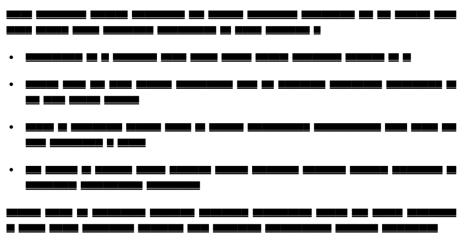
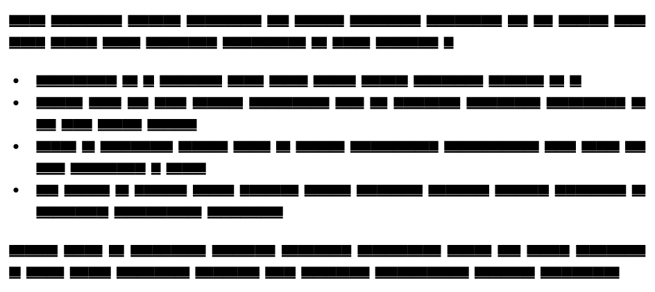
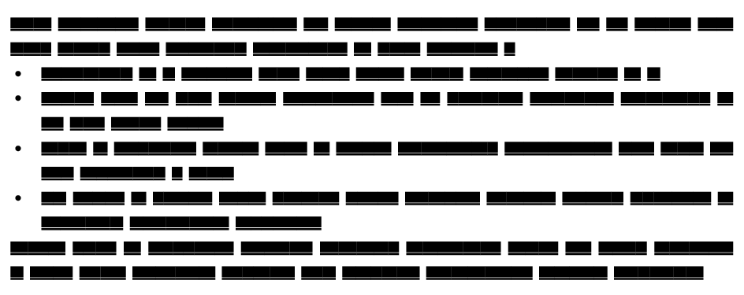
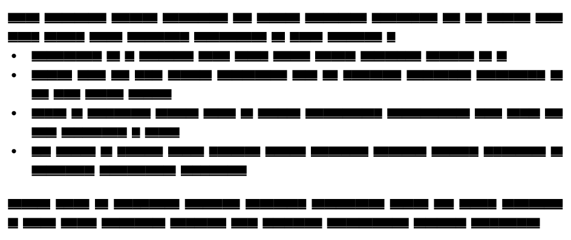
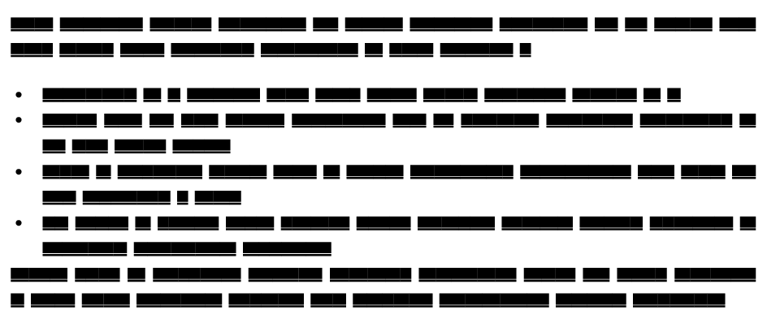

Adjust spacing in itemize environments
Posted on July 25, 2020
Today I was working on a LaTeX doc and needed to adjust spacing around the LaTeX itemize environment. I wanted a list of item with no space before the list environment and the list of items, no space between the items, but space after the environment. The TeX FAQ has a summary of how to adapt spacing around itemize environment in LaTeX. Reading that made me appreciate the control provided by ConTeXt. So, I thought that it is worthwhile to show that.
Let’s start with the default spacing. I am going to use the following sample document.
\usemodule[visual]
\starttext
\fakewords{20}{25}
\startitemize
\dorecurse{4}{\item \fakewords{10}{15}}
\stopitemize
\fakewords{20}{25}
\stoptextwhich gives:
Notice the space before and after the itemize environment and the space between the items.
Now, to get no spacing between the items, use:
\startitemize[packed]
. . .
\stopitemizewhich gives:
To get no spacing between the items and no spacing around the environment, use:
\startitemize[nowhite]
. . .
\stopitemizewhich gives:
Sometimes, this is too tight. To add spacing after the environment, use
\startitemize[nowhite, after]
. . .
\stopitemizewhich gives:
Finally, to have space before the environment (but not after), use:
\startitemize[nowhite, before]
. . .
\stopitemizewhich gives:
That was simple. Now back to trying to wrap my head around the LaTeX spacing model.
This entry was posted in Formatting and tagged itemize, spacing.